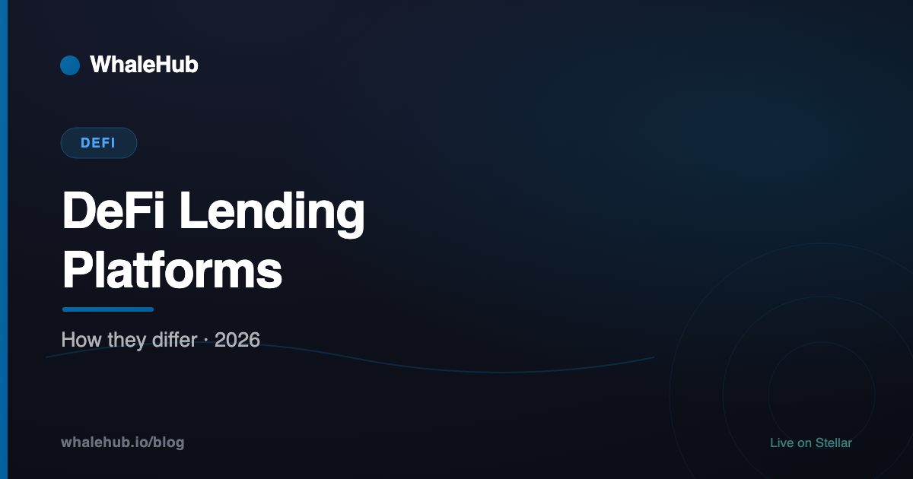

DeFi Lending Platforms in 2026: How They Differ

Most DeFi lending platforms look alike from the outside: supply an asset, earn a rate; post collateral, borrow against it. The differences that decide whether you lose money are structural — how risk is partitioned, where prices come from, and what happens when a liquidation fails.
The shared model
Nearly every DeFi lending platform is over-collateralised and rate-discovered by utilisation. Suppliers deposit into pools; borrowers post more value than they take; rates rise as the borrowed share of a pool grows. That is the whole common core.
Over-collateralisation is not conservatism, it is necessity. There is no identity, no credit file and no court that will help a lender pursue a pseudonymous borrower, so the collateral has to do the work that a legal system does elsewhere. Any platform offering uncollateralised loans to anonymous users is doing something else — see crypto loans without collateral.
Pooled vs isolated
This is the most consequential design choice and the least visible in a front end.
| Pooled | Isolated | |
|---|---|---|
| Risk | Shared across all listed assets | Contained to one market |
| If an asset fails | Bad debt can hit every supplier | Loss stays in that market |
| Liquidity | Deeper, better rates | Thinner, fragmented |
| Listing bar | High — every listing is a shared risk | Low — permissionless is viable |
A pooled market gives better rates because capital is not fragmented, and the price is that a governance mistake on one obscure listing can socialise a loss to everyone. Isolated markets invert both. Most large protocols now run a hybrid — a conservative shared pool plus ring-fenced markets for riskier assets, which is what Aave's isolation mode does.
When evaluating any platform, find out which model your deposit sits in. Suppliers often assume they are isolated when they are pooled.
Oracle design
Every lending protocol needs to know what collateral is worth. That price comes from an oracle, and oracle manipulation has historically caused more DeFi losses than smart contract bugs.
What to look for: whether prices come from a major provider or the protocol's own feed; whether they are aggregated across venues or read from a single pool that can be pushed; whether there are circuit breakers for implausible moves; and how the protocol behaves if a feed goes stale — does it halt, or keep liquidating on old data?
A protocol reading its collateral price from a thin on-chain pool is not secured by its audits. Someone can move that pool.
Liquidation mechanics
Liquidations are where a lending protocol either works or doesn't, and the details vary more than people expect:
- Bonus size. Liquidators need an incentive; you pay it. Too small and nobody liquidates in a fast market, which creates bad debt. Too large and borrowers are punished harshly for brief excursions.
- Partial or full. Some protocols close only enough to restore health; others take the whole position. The difference is significant when you are the one being closed.
- Who may liquidate. Permissionless is the norm and is healthier — a closed set of liquidators can be absent exactly when needed.
- What happens on a shortfall. If liquidation does not cover the debt, someone absorbs it: a reserve fund, a staking backstop, or suppliers via socialised loss. Find out which before supplying.
Questions that separate them
- Pooled or isolated — and which is my deposit in?
- Where do collateral prices come from, and what happens if the feed fails?
- Who absorbs bad debt? Reserve, backstop, or suppliers.
- What is current utilisation on the asset I want to supply? High utilisation means a good rate and a possible queue to exit.
- Who can change parameters, and how fast? A governance vote can alter collateral factors your position depends on.
- Has it run through a real crash? Protocols that have handled a violent drawdown have evidence; new ones have assumptions.
The summary
The lending model is standard; the risk architecture is not. Establish whether your deposit is pooled or isolated, where the price comes from, and who eats a shortfall. Those three answers tell you more than any rate comparison, and they are usually a click or two further into the documentation than the front page.
Frequently asked questions
What is a DeFi lending platform?
A protocol that matches lenders and borrowers through smart contracts rather than a company. Suppliers deposit assets into pools and earn interest; borrowers post collateral worth more than they borrow. There is no credit assessment — over-collateralisation replaces it, because a pseudonymous borrower cannot be pursued for a shortfall.
What is the difference between pooled and isolated lending markets?
In a pooled market all assets share one risk pool, so a failure in one listed asset can create bad debt borne by every supplier. In an isolated market each pair is ring-fenced, so a blow-up is contained to that market. Pooled markets offer deeper liquidity and better rates; isolated markets contain contagion. Most large protocols now offer some form of both.
Why do DeFi loans require over-collateralisation?
Because there is no way to enforce repayment against a pseudonymous wallet — no identity, no credit file, no court. Posting more value than you borrow means the lender is protected by the collateral rather than by trust, and the protocol can sell that collateral automatically if the cushion thins.
What is the biggest risk in DeFi lending?
For borrowers, liquidation, which is automatic and happens fastest in the worst markets. For suppliers, a combination of bad debt (a liquidation that fails to cover its loan) and withdrawal risk at high utilisation. For everyone, smart contract and oracle failure — with oracle manipulation historically causing more losses than contract bugs.
How are DeFi lending rates set?
Almost always by a utilisation curve. As more of a pool is borrowed the rate rises to attract supply and discourage borrowing; as utilisation falls the rate drops. Nobody sets it by hand, which is why quoted rates move constantly and why a rate today is not a rate tomorrow.
Is supplying to a DeFi lending platform safe?
Safer than borrowing on the same platform, since there is no liquidation risk on your own position, but not safe. You still carry smart contract risk, oracle risk, the possibility of socialised bad debt, withdrawal constraints when utilisation is high, and the price risk of whatever you supplied.
WhaleHub is a yield-optimization protocol on Stellar. We stake AQUA, aggregate ICE voting power, and auto-compound Aquarius rewards for stakers. This series explains the Stellar DeFi stack — and the wider market around it — in plain English.
Read more


Earn without borrowing
WhaleHub pools AQUA into a shared governance position on Stellar. No collateral, no liquidation price.
Launch the appThis article is for educational and informational purposes only and is general information, not financial advice. WhaleHub is not affiliated with any protocol described. Protocol mechanics, rates and parameters change frequently — verify current details directly with the protocol before depositing. DeFi involves risk, including smart-contract failure, liquidation and the total loss of capital.